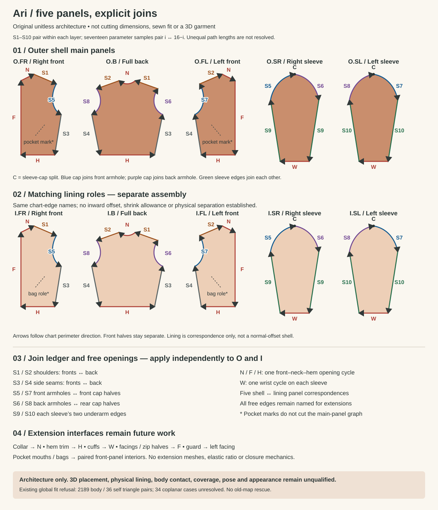

<!doctype html>
<html lang="en"><meta charset="utf-8"><meta name="viewport" content="width=device-width,initial-scale=1"><title>Ari panel architecture</title><style>body{margin:0;background:#faf7f0;font-family:Arial,sans-serif;color:#283333}main{max-width:1360px;margin:auto}img{display:block;width:100%;height:auto}nav{padding:20px 40px;display:flex;gap:24px;flex-wrap:wrap}a{color:#164e64}</style><main><nav><a href="panels.svg">Editable SVG</a><a href="PANELS.json">Seam ledger</a><a href="ARCHITECTURE.md">Scope and limits</a><a href="../../appearance-2026-10-07/ari-bomber-drawing/original-first.jpg">Original design</a><a href="../ari-sleeve-draft/review.html">Rejected sleeve views</a></nav></main></html>
